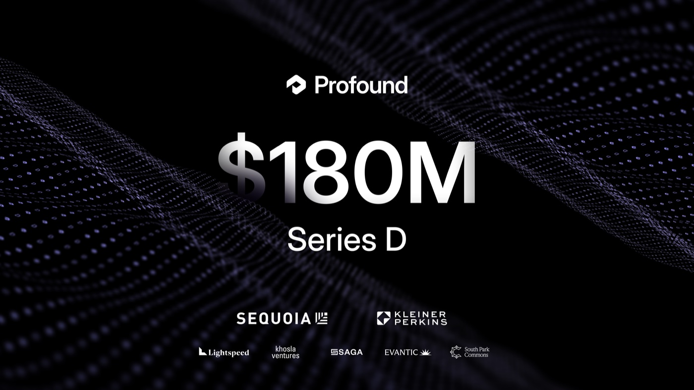
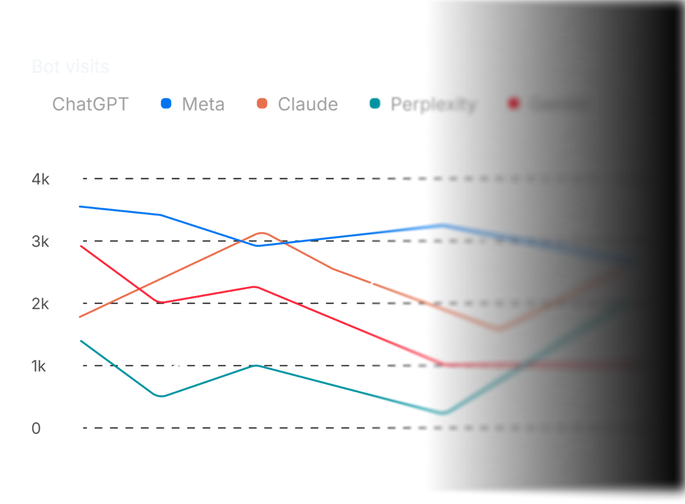

Executive Summary
A company that measures which brands an AI names when it composes an answer, and sells that measurement, announced a Series D on September 15. The company is Profound, based in New York, and the round is $180M at a $1.8B valuation, co-led by Sequoia Capital and Kleiner Perkins. This article looks at what that price was put on, and at the state of the ruler used to measure it.
Set beside the previous round, the speed shows. At the Series C on February 24 the company was worth $1B. In under seven months the figure is 1.8 times that, and over the same stretch enterprise customers went from more than 700 to more than 1,000. And yet an audit published in May reports that the metric this industry sells reproduces worse than the same sentence run twice does. Most of the recommended list turns over when the same request is put in slightly different words.
The response from the company named in that paper is the part worth pausing on. Weeks later, Profound's own research blog carried a piece explaining how it designs its measurements. The piece lists phrasing sensitivity as one of three forces that move the numbers, and states that phrasing drives what the model retrieves. The audit points at the same chain. Sections 1 through 4 follow what the company put in its round announcements and that research post, and what the audit paper records. Section 5 carries the question over to data practice, and that reading is this article's own, not something in those documents.
Key Figures
Sources: Profound announcement (2026-09-15) · Unusual audit paper (arXiv, 2026-05-22)
$1.8B
Series D valuation
On $180M raised. February's Series C put the figure at $1B, so under seven months brought a 1.8-fold rise
0.288
Overlap between cosmetic rewordings
Roughly 55% of the recommended list turns over. A rerun of the untouched sentence turns over 33 to 38%
0.135
Overlap once a constraint is added
Narrowing "CRM" to "CRM for a SaaS startup" is about enough to swap the list outright
1,000+
Enterprise customers
More than a third of the Fortune 100. In February the count was over 700. The CEO's letter a day later says 2,500+ brands, counting on a wider basis
What Happened?
At the front of this round are Sequoia Capital and Kleiner Perkins. Lightspeed Venture Partners, Khosla Ventures, Saga Ventures, Evantic, and South Park Commons came in alongside them. No new name joined. Across the five announcements the company has published, the head of the table has gone around once and come back. Kleiner Perkins led the Series A in June 2025, and Sequoia led the Series B two months later. At February's Series C the two ceded the lead to Lightspeed, and this time they returned together.
The speed of the repricing is the heart of this announcement. The five rounds the company has announced itself, in order:
| Date | Round | Led by | Valuation |
|---|---|---|---|
| August 2024 | Seed · $3.5M | Khosla · Saga · South Park Commons | Undisclosed |
| June 2025 | Series A · $20M | Kleiner Perkins | Undisclosed |
| August 2025 | Series B · $35M | Sequoia Capital | Undisclosed |
| February 24, 2026 | Series C · $96M | Lightspeed | $1B |
| September 15, 2026 | Series D · $180M | Sequoia · Kleiner Perkins | $1.8B |
Each row comes from the announcement the company published on its own blog for that round. Valuations have been disclosed from the Series C onward. February's Series C press release put total funding at more than $155 million, which puts the tally past $335 million once this round is added. The company was founded in New York in 2024.

Growth figures came out alongside the round. Revenue has tripled over the past six months by the company's own account, and enterprise customers passed 1,000, covering more than a third of the Fortune 100. The company describes itself as a platform used by 16% of the Fortune 500. Seven months ago, in the same spot in the Series C release, those numbers read more than 700 enterprises and more than 10% of the Fortune 500. The customer list names Comcast, The Estée Lauder Companies, Walmart, Campari Group, Royal Bank of Canada, Zoom, ServiceNow, Ramp, Cursor, MongoDB, and Figma. The money goes to expanding an applied AI lab in New York City and San Francisco. That team will study how frontier models perform on marketing work, evaluate their capabilities, and post-train models specifically for marketing.
What the investors bet on comes through in a line from Ilya Fushman, a partner at Kleiner Perkins. Fushman is not a new arrival, having joined the board at the Series A that Kleiner Perkins led. The sentence below restates a position held for fifteen months rather than a fresh verdict.
“As AI becomes a primary interface for search and discovery, marketing is being rebuilt around a new set of workflows.”
The premise is that AI answers are taking over the spot search held as a brand's front door. If the premise holds, how often and in what way a brand's name comes up inside those answers becomes a number worth measuring. This round is the price attached to the job of measuring it.
What Does This Company Sell?
The category goes by answer engine optimization (AEO) or generative engine optimization (GEO). In place of fighting over which line of the search results a page lands on, the work is fighting to get a brand and its documents cited when an AI composes an answer. The headline number these tools sell usually comes down to one thing. Fire a fixed set of questions at several AI systems on a schedule, count how often the brand's name appears in the answers, and report the result as a ratio against competitors. The industry calls that AI share of voice.

Several companies sell some version of this. Otterly, LLM Pulse, HubSpot's AEO Grader, Authoritas, and Semrush all sit in the same space. Profound is the one that has pushed furthest into the enterprise. What the company put at the front of this announcement was not a leaderboard either, but software that does the work. An agent called AI Marketer reads brand data, analyzes AI answers, works out what needs doing, and hands execution to sub-agents. Context Manager holds the brand context those agents work from, and Ads Studio handles ad buying.
The press release names data as the company's own asset: the platform is built on more than two billion real user prompts and still growing. It watches both what people ask AI and what the models say back. James Cadwallader, the co-founder and chief executive, summed up where the company stands.
“Our customers have shown us how much more marketing teams can take on when they have purpose built AI to help them do the work.”
That is the seller's account. The question the buyer wants answered is much simpler. Is our brand showing up more inside AI, or less? A single arrow on a weekly report stands in for the answer. What is that arrow made of?
How Much Does That Ruler Move?
For the approach to hold, one quiet assumption has to be true. The sentence picked for tracking has to stand in for the buying intent behind it, so that a single line, "best CRM," represents everyone looking into CRMs. Only under that assumption can the difference between this week and last week be read as the model shifting or as run-to-run noise.
An audit posted to arXiv on May 22 tested that assumption directly. The authors took about twenty base questions from commercial contexts and reworded each along five axes: swapping in near-synonyms, changing the grammatical form of the question, adding and removing modifiers, changing region and language, and sliding the scope from broad to narrow. Each variant went to combinations of OpenAI and Anthropic models twenty times over, for roughly 6,000 runs. As a comparison floor they built a separate 6,000 runs in which the sentence was left alone and the same question was reissued thirty times. To settle which brands an answer had recommended, they put the judgment to two different models and counted only what both called a recommendation.
Once they measured how much the recommended lists overlap under each condition, the order turned upside down.
For rewordings that left the meaning alone and touched only the surface, the overlap came to 0.288 (95% confidence interval 0.215 to 0.361). For rewordings that added a constraint and narrowed the scope, it fell to 0.135 (0.098 to 0.175). Jaccard is not an intuitive scale, so the authors converted it into list terms. A value of 0.288 means roughly 55% of the recommended list turns over, and 0.135 means roughly 76% does. Reissuing the same sentence turns over only 33 to 38%.
Why is the baseline not 1? Even with the temperature set to zero, the answer is not identical every time, and earlier work traced the residue down to the order of floating-point operations and the numerical precision of the inference stack. However tightly the conditions are pinned, a floor remains that cannot be undone. Add the share contributed by a different set of documents being retrieved each time, and the rerun baseline lands between 0.50 and 0.61. The reworded prompts came in below even that. One step further out, the same sentence sent separately to OpenAI and to Anthropic produced lists that overlapped at 0.33. Changing the wording inside one provider moved the list more than swapping the provider outright.
More reasoning effort did not close the gap. The shift the authors measured stayed inside ±0.05, and the reason lies in the nature of the task. On a math problem, longer thinking converges on one right answer; on which CRM to recommend, several answers are defensible. So the model puts the extra effort into elaborating on the candidates it already pulled in rather than narrowing them down. A better model or a more expensive setting does not fix this.
The result says one thing. The arrow on a weekly report cannot be split into the model shifting its treatment of a brand and the tracking tool happening to pick that particular sentence. In the paper's own terms, the dominant source of variance in that number is not how the model regards the brand but which phrasing was issued.
The paper gives a section of its own to why the swings run this deep. An AI today does not answer straight off. It searches the web first, pulls in a handful of documents, and builds its sentences on those. Change the question and the search terms change; change the search terms and the documents that come back change; change the documents and the pool of brands the model can pick from changes. The recommended list sits at the far end of that chain. The authors measured the front of the chain too, and found that even when the sentence was left alone and the same question was reissued, the overlap among the source domains retrieved ran from 0.40 to 0.74 depending on the model combination. The combination whose search results gathered most tightly was also the one whose recommended lists moved least. The swing starts in the layer that fetches the grounds rather than in the model's judgment, and on that reading the authors put the job of closing the gap on the model providers rather than on the tracking tools.
Who did the measuring belongs in the reading. All four authors work at a company called Unusual, which sells research and strategy built on treating AI as a brand's new audience, and so sells a different approach in the same market as Profound. The body of the paper names Profound and competing tools outright while criticizing their methodology. A measurement by an interested party is not wrong for that reason, but the interest rides in the choice of what to measure. The reference list shows this is not a one-off complaint either. References 1 through 3 are all research the same author published under the company's name, and one of them is an audit of 37,000 runs.
The paper is not short on limitations it states itself. The measurement covers a single day, so it does not separate drift across dates from the swing caused by phrasing. The questions are English only and skew toward the US, UK, and EU markets. Brand judgments count only what both judge models agreed on, a conservative protocol that undercounts total mentions. And the brand catalog and the retrieval substrate used for comparison were held fixed throughout, so what happens when either of those changes is outside what this paper answers. The constraints on the method are these: about twenty base questions, two model providers, and a paraphrase grid that dropped the heaviest of four cells on cost grounds.
So What Has to Change?
The remedy the paper offers is not a bigger sample. Gathering more phrasings does reduce the swing, but by the authors' reckoning the range of wording real buyers use is wider than any tracking tool's budget. So they write that the answer is not more prompts but a different unit of measurement. Carried into practice, that comes out in four strands.
- The confidence interval on share of voice measured from a single question is wider than typical week-over-week movement. A ruler like that cannot identify this week's rise or fall on its own.
- A tool that does not disclose the questions it tracks is hard to interpret, because the swing from phrasing and genuine movement never get separated inside the report.
- Experiments claiming that reworking content lifted visibility inherit the same problem. The 2024 paper that opened this line reported a lift of about 40%, and the audit does not dispute the direction, while noting that a figure measured on a fixed prompt set does not separate the lift from the share contributed by the choice of phrasing.
- Metrics that sit downstream of the mention, such as traffic, conversion, and pipeline contribution, sum over the variety of phrasings by construction, since every buyer asks in their own words. That road brings difficulties of its own, starting with where to set the attribution window.
The target of this criticism is the fixed bundle of tracking sentences, not the job of measuring AI answers. And the company named in the paper did not stay quiet. On July 8, about a month and a half after the paper appeared, Profound published a post on its research blog titled Is once a day enough? It reports a side-by-side experiment that ran the same setup once a day and ten times a day for two weeks. Across 5,271 configurations built from 753 prompts on 7 engines, one instance logged roughly 129,000 runs and the other 860,000.

In this experiment the conclusion matters less than how the company sorted the forces moving its numbers. It split them into three: same-day randomness, phrasing sensitivity, and platform drift. Under the second heading the company writes, “Reword a prompt and the answer changes. That's not a glitch; the model is genuinely responding to a different question. It means the specific wording you choose is a real ingredient in your results, so prompts should be chosen deliberately.” In its table of examples the reason is set down in one line: “Phrasing drives what the model retrieves.” The chain the audit measured in Jaccard is written out in the same words by the company it criticizes.
The company went as far as measuring it. It built 2,000 synthetic portfolios that held the intent constant and varied only the mix of phrasings. On citation share, the sensitivity to prompt mix came out, in the company's words, “an order larger than day-to-day platform drift.” Its own summary: which prompts you track matters more than how often you run them, and “how you build your portfolio is a first-class decision, not a minor detail.”
So the two documents do not collide so much as miss each other. The paper measured how much the recommended lists overlap when one intent is asked in several phrasings. The company measured how stable an average across thousands of prompts is. The paper grants that holding more phrasings reduces the swing, so the company's answer reads less as evasion than as a claim to be doing already what the paper prescribes. One question is left over. Are those thousands many phrasings per intent, or many intents with one phrasing each? The prompt design guide the company gives its customers says to “aim to start with a list of 100 prompts” and puts most users between 100 and 1,000, spread evenly across the stages of the journey from awareness through post-purchase. There is no advice anywhere in it about splitting one intent across several phrasings. That shape is the design the paper measured at 0.288. Settling which side is right takes a disclosure of how many phrasings per intent the company runs, and that number appears in none of the documents.
Why Pebblous Is Watching This Round
From here the article leaves the announcements and the paper and rereads this news from the data side. The question Pebblous has held onto for a long time is where a value came from and what it passed through to become what it is now. AI share of voice sits where that question has been translated into marketing language. This number is not an observed fact but a manufactured value. Somebody decided which questions to pick and how many, how many times to run them, which models to send them to, and what counts as a mention. If that design never makes it into the report, the number is all that is left.
So a reading of this round as good news for marketing software and nothing more gets half of it. The target $1.8B points at is also one whose ruler has not settled yet. Make a metric with a moving scale into a team's key performance indicator and the judgments stacked on top move by the same width. Whether to rework the content and where to shift the budget end up settled as a by-product of which phrasing got picked.
One thing has to be said straight. In the letter the chief executive posted the day after the announcement, the company itself no longer leads with measurement. Most of it is about agents doing marketing work, and the sentence where the company places itself says it sits at the application layer, above the models. It carries the comparison further: what Salesforce did for the sales org in the cloud era, Profound intends to do for marketing in the generative era. A criticism aimed at the reproducibility of a metric lands on a product the company is moving its weight away from. The question survives for a separate reason. That metric is still the door customers come in through, and the same data is what a new agent reads when it works out what to fix. An error in the scale slips by more quietly when an agent runs on it than when a person reads it and decides.
Teams already measuring brand exposure inside AI answers, or about to start, have five things worth checking.
- Can you say right now how many questions the number in your report came from? If you cannot, you cannot state its margin either.
- How many times was each question run before the average was taken? A value from one run apiece is a single sample, not a measurement.
- How closely do those questions resemble the words real customers use? What a marketing team invents and what a buyer types are usually different.
- Are you reading models, regions, and languages apart from each other? One blended average erases which condition produced what.
- Who set the design of this measurement? If the vendor set it, start by checking whether that design is documented in public.
Thank you for reading this far. The figures and quotes this article cites can be read in the original by anyone, in Profound's announcement and in the audit posted to arXiv. We would be glad to hear how your own organization keeps an eye on what AI says about your company.
References
Academic Paper
- 1.Jack, W., Lehman, N., Maloney, K., Xu, S. (2026). "Paraphrase Brittleness in Production Retrieval-Augmented Commercial Recommendation: Reproducibility Below the Rerun-Stability Baseline." arXiv:2605.27440.
Industry Sources
- 2.Profound. (2026-09-15). "Profound Raises $180M Series D at $1.8B Valuation to Build the AI Platform for Marketing Teams." GlobeNewswire.
- 3.Profound. (2026-09-16). "Series D." Profound Blog.
- 4.Zou, J. (2026-07-08). "Is Once a Day Enough?." Profound Blog.
- 5.Lafferty, N. (2026-02-10). "How to Design Prompts for AI Visibility Tracking." Profound Blog.